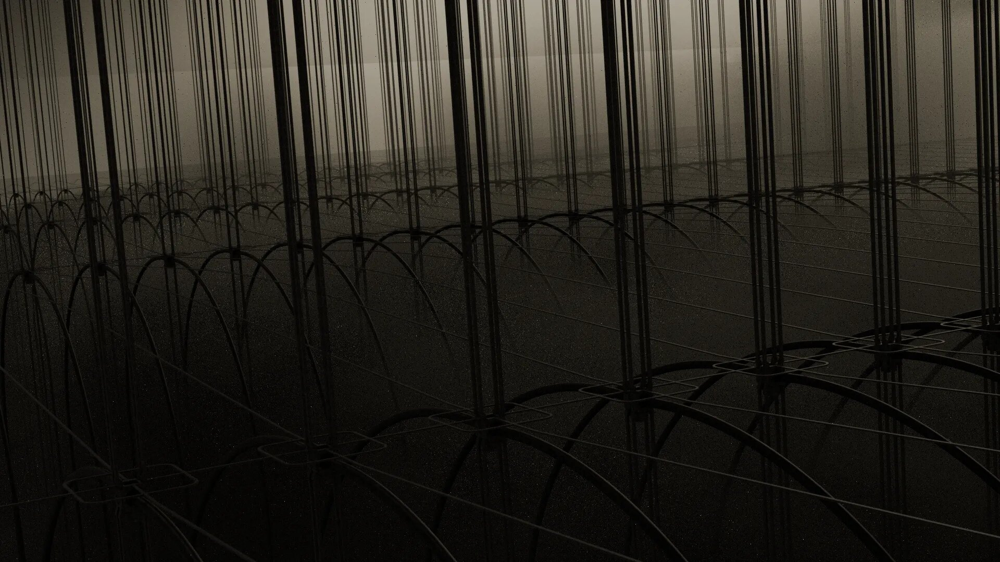
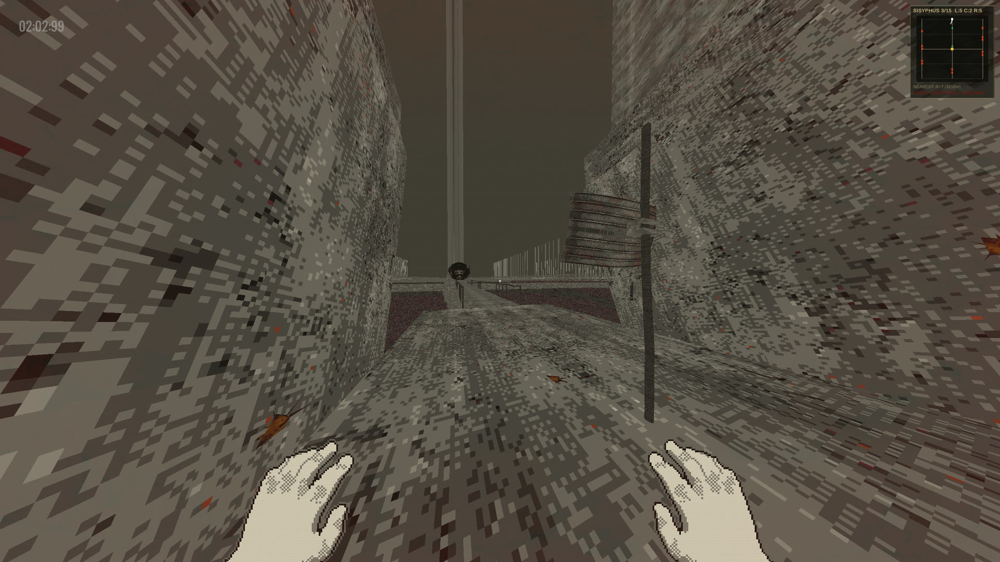
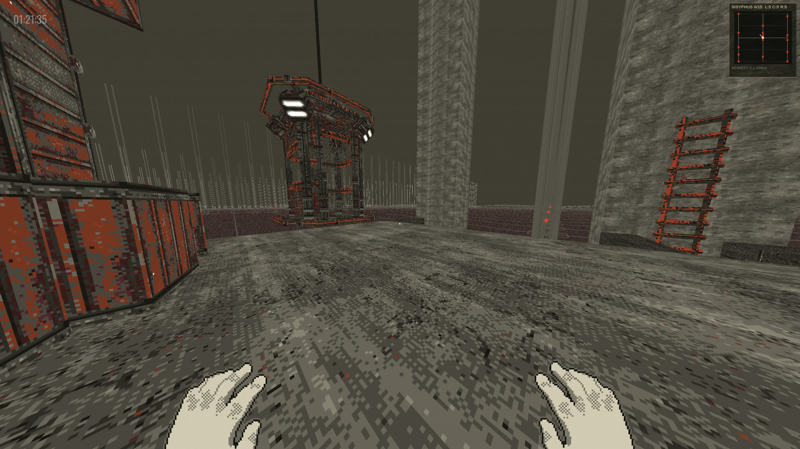
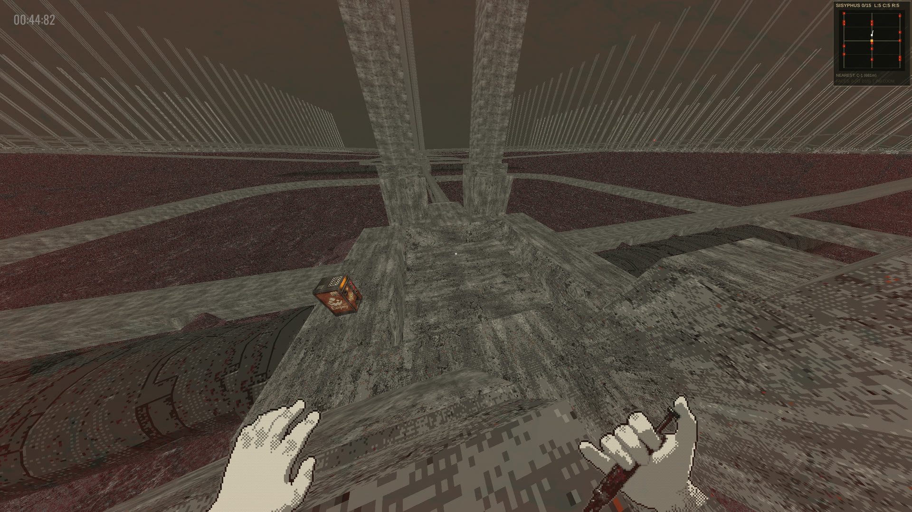

TRACK
Custom megacomplex map and gameplay mod for White Knuckle. A 360° brutalist concrete structure suspended in fog: fifteen radar towers, a rising Mass, and one evacuation elevator out.
Download
| Current release | 1.0 |
|---|---|
| Requires | White Knuckle, BepInEx 5, WKMapLoader |
| File size | -- MB |
| SHA-256 | 0000000000000000000000000000000000000000000000000000000000000000
copy |
See the installation instructions below.
Screenshots
 Starting platform
Starting platform
Radar deck Fog line
Fog line
Vending corner
Pursuer contact
Tether elevator


About the map
- 360° endless brutalist concrete megastructure suspended in thick fog.
- Activate all 15 custom Radar stations across 15 towers to pump down the rising Mass.
- Survive escalating Dead Face / Remains pursuers stalking through the mist.
- Scavenge Rusty, Gold and Platinum Roaches and restock at unlimited corner Vending Machines (Injector, Blink Eye, Pills).
- Unlock and ascend the Tether Evacuation Elevator at the starting tower once all 15 Radars are online.
Installation
Requirements: White Knuckle with BepInEx 5 and WKMapLoader installed.
-
Extract
TRACK_v1.0.zipinto your plugins folder:White Knuckle/BepInEx/plugins/copy
The archive containsTrackAppearance/,StationMap/andWKMapLoader/maps/TRACK_start_test.*— keep the folder structure intact:White Knuckle/ └── BepInEx/ └── plugins/ ├── TrackAppearance/ ├── StationMap/ └── WKMapLoader/ └── maps/ └── TRACK_start_test.* - Launch White Knuckle, open Custom Maps and select TRACK Start Test.
- No console commands required — everything starts automatically.
Release notes
v1.0
- TRACK megacomplex: 15 towers, 360° looping layout in heavy fog.
- 15 custom Radar stations wired to the Mass pump-down system.
- Tether Evacuation Elevator at the starting tower, unlocked at 15/15 Radars.
- Escalating Dead Face / Remains pursuer waves.
- Unlimited corner Vending Machines: Injector, Blink Eye, Pills.
- Rusty / Gold / Platinum Roach economy across the sector.
- No console commands: the map starts automatically on load.
Credits
| Map & mod | YOUR NAME HERE |
|---|---|
| Built on | BepInEx 5, WKMapLoader |
| Game | White Knuckle by Dark Machine Games |
| Links | Discord · YouTube · Source |